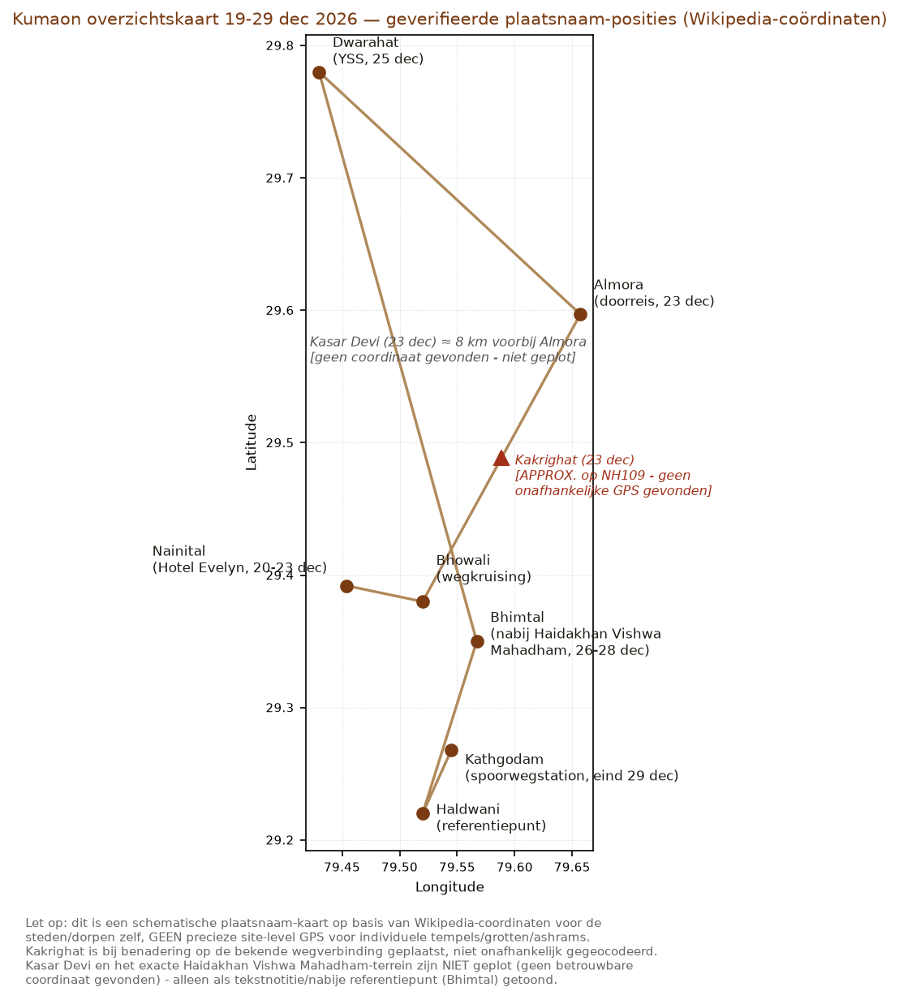

India-reis 2026-2027 — Kumaon dagplan
19 t/m 29 december 2026 — huidig beste uitvoerbare plan, per dag compleet
Dit is één aanbevolen uitvoerbaar plan, niet een keuzemenu. Elke dag hieronder staat op zichzelf: alles wat je die dag nodig hebt staat in dat dagblok, niets in een aparte bijlage. Operationele dag start bij vertrek hotel/slaapplek — geen ontbijt/douche-items.
[MARK] = expliciete Mark-beslissing. [CCI-AANBEVELING] = CCI-advies, nog geen Mark-beslissing.
v5 — 21 dec nu een concrete lineaire wandeling (Kasar Devi Temple → Crank's Ridge → Kalimath, ~3u, chauffeur drop-off/pick-up op twee punten), Mark-besluit 2026-09-21. v4 herstelde de inhoud (Crank's Ridge/Hippie Hill + Lama Govinda's wereld) na semantisch verlies in v3; Turiya Niwas bewust NIET terug (A*→B). v3 corrigeerde de hotelbasis 23–25 dec naar Hotel adiMOUNT. v2 voegde kloktijden toe. Bron: PR #23, CURRENT_TRUTH.md. Gegenereerd 2026-09-21.
Overzichtskaart Kumaon-corridor

- 09:45–10:15 Landing AI156 Amsterdam → Delhi (extern vast).
- 10:15–11:00 Douane/bagage, taxi naar hotel.
- 11:00–20:30 Hotel New Frontier, Delhi [MARK — locked] — rust na de lange vlucht, geen inhoudelijke bezoeken.
- 20:30–21:45 Uitchecken, taxi naar New Delhi-station.
- 22:05 Vertrek trein 15013 Ranikhet Express, New Delhi → Kathgodam (extern vast, LIVE_RECHECK dec-2026 dienstregeling; voorkeur 1AC/2AC). Dit is niet dezelfde trein als de uitgesloten 04:10-optie op 29 dec — dat is de terugweg naar een groot station; dit is de heenweg naar een klein bergstation met vooraf geregelde auto.
Optioneel A* als de dag veel ruimte over heeft: geen — reisdag.
- 05:05 Aankomst Kathgodam (extern vast, zelfde LIVE_RECHECK als 19 dec).
- 05:15–06:45 Vooraf geregelde auto Kathgodam → Nainital (~35 km/~1–1,5 u).
- 06:45 Aankomst Hotel Evelyn. Vroege check-in vooraf regelen — LIVE_RECHECK bij hotel.
- 06:45–15:00 Vrij: rust/slaap inhalen, acclimatiseren.
- 15:00–17:00 Wandeling rond Naini Lake, vrij tempo.
- Avond Vrij, vroeg diner mogelijk.
Optioneel A* als de dag veel ruimte over heeft: geen specifiek voor deze dag.
- 07:45 Vertrek Hotel Evelyn met vooraf geregelde chauffeur, geen bagage.
- 07:45–10:00 Rit naar Evam Choskhorling Monastery/Drikung Kagyu Meditation Centre (~65–70 km, ~2u15).
- 10:00–11:00 Lama Anagarika Govinda's historische Kasar Devi Ashram ("Bodh Ashram"), huidige voortzetting: Evam Choskhorling Monastery / Drikung Kagyu Meditation Centre. Wat het is: boeddhistisch klooster/retraiteterrein (oorspr. ~16 ha) op het landgoed van eerst W.Y. Evans-Wentz, daarna Lama Govinda en Li Gotami, eind jaren '70 overgedragen aan de Drikung Kagyu-lijn. Wie/gebeurtenis: Neem Karoli Baba (Maharajji) gaf Ram Dass de instructie "ga Lama Govinda bezoeken" — Ram Dass noemde die ontmoeting later een diepe overgave-/thuiskomstervaring. Directe Maharajji→Ram Dass→Govinda-lijn, kernverbinding in je NKB/Ram Dass-wereld. Geen bewezen origineel Govinda-huis of exacte Ram Dass-kamer — niet beweerd. DIRECT-CONFIRM: terrein normaal gesloten behalve bij events; lukt dit niet, dan meer tijd voor de wandeling hierna, geen verzonnen vervangende plek.
- 11:00–11:20 Chauffeur rijdt naar startpunt Kasar Devi Temple (gratis parkeren bij de tempelingang, direct per auto bereikbaar) — LIVE_RECHECK exacte tijd, aangenomen kort binnen dezelfde bergkam-cluster.
- 11:20–14:20 Lineaire wandeling, ~3 uur (incl. tempel, uitzicht, foto's, zitten/mediteren — geen 3 uur onafgebroken stevig lopen):
- Kasar Devi Temple — tempel op de bergkam, oorsprong 2e eeuw; ook hier kwam Vivekananda eind 19e eeuw mediteren (los van de vastgelegde Grot Vivekananda op 23 dec).
- Kort (~20–30 min) klimmend pad naar Crank's Ridge (Hippie Hill) — de dennenbos-bergkam zelf, decennialang toevluchtsoord voor westerse kluizenaars/zoekers (W.Y. Evans-Wentz, Lama Govinda, Alfred "Sunyata" Sorensen, en later Allen Ginsberg, Gary Snyder, Timothy Leary, Ralph Metzner, Richard Alpert/Ram Dass).
- Verder over de bergkam (~3–4 km bospad, grove den/eik/rododendron, vogelrijk) naar Kalimath — oud Shiva-heiligdom/tempel-gehucht, panoramisch zonsondergangs-/riviervalleiuitzicht over Hawalbagh en de Koshi.
Moeilijkheidsgraad: meerdere onafhankelijke bronnen noemen dit pad "makkelijk", bestaande lokale wegen/bospaden, geen steile klimmen — geen aanwijzing dat decemberomstandigheden een gids noodzakelijk maken; vertrouw op de chauffeur en vraag ter plekke bij de tempel naar de actuele route. LIVE_RECHECK: geen geverifieerde Komoot/Wikiloc/AllTrails-track gevonden (AllTrails-pagina bestaat, kon niet direct opgehaald worden); lengte/hoogteprofiel niet onafhankelijk bevestigd.
- 14:20 Chauffeur pick-up bij Kalimath (apart via de weg bereikbaar, ~10 km vanaf Almora — een echte lineaire wandeling, geen retour).
- 14:20–14:50 Lunch/buffer onderweg.
- 14:50–17:00 Terugrit naar Hotel Evelyn (~2u10, LIVE_RECHECK exacte extra afstand vanaf Kalimath).
- 17:00 Aankomst Hotel Evelyn, ruim voor zonsondergang (~17:16) — de wandeling zelf was al om 14:20 klaar, dus ruim voor donker. Vrije avond.
DIRECT-CONFIRM: (1) toestemming Evam Choskhorling/Drikung Kagyu Meditation Centre; (2) exacte staat van het Kasar Devi→Kalimath-pad en chauffeur-rijtijd naar Kalimath. Turiya Niwas staat hier bewust niet op — Mark heeft dit op 2026-09-21 van A* naar B gezet en volledig uit de actieve planning gehaald.
Optioneel A* als de dag veel ruimte over heeft: geen voor deze dag.
- 08:30 Vertrek Hotel Evelyn → Kainchi Dham (~40–50 min).
- 09:15–12:30 A+ Kainchi Dham — Neem Karoli Baba/Maharajji's hoofdashram. [MARK] beschermde minimum 3 u, mag gracieus door tot 13:15.
- 12:30–13:00 Rit Kainchi → Bhumiadhar (~11,6 km/~25–30 min).
- 13:00–13:50 A Bhumiadhar — rustigere Maharajji/Hanuman-ashram-wereld, ~45–55 min. Geen bevestigd 360°-uitzichtpunt — geen belofte, wel een rustige tweede stop. Lunch hier of net ervoor/erna.
- 13:50–14:45 Terugrit naar Hotel Evelyn (~17–20 km/45–60 min).
- 14:45 Aankomst Hotel Evelyn, vrije avond.
Optioneel A* als de dag veel ruimte over heeft: geen specifiek.
Grote bergdag: ~130–140 km bergrijden totaal.
- 08:00 Vertrek Hotel Evelyn richting Almora (NH109).
- ±08:45–09:15 Optioneel Dhokaney Waterfall (Suyalbari) — alleen als de dag hier al vroeg loopt, zie reserve-box.
- 09:15–10:00 A+ Kakrighat — twee fysieke sublagen, samen in hetzelfde kleine rivieroever-complex aan de Kosi:
- 1. Swami Vivekananda Jnana Vriksha / Karkateshwar Mahadev-zijde — heropgeplante heilige pipal-boom + Shiva-tempeltje aan de rivier; Vivekananda's microkosmos–macrokosmos-realisatie, augustus 1890. Leescue: Complete Works, Vol. 9, "Macrocosm and Microcosm".
- 2. Neem Karoli Baba Kakrighat Dham / Hanuman-tempel-zijde — Hanuman-tempel + samadhi/oude kluis van Sombari Baba (met Panjabi Baba als gedeelde context), later voortgezet door Maharajji.
- 10:00–10:45 Rit naar Almora/Kasar Devi (~35 km incl. Almora-doorreis).
- 10:45–13:15 A+ Grot Vivekananda / Kasar Devi Cave — beschermde meditatietijd (~2,5 u), niet inkorten.
- 13:15–13:45 Lunch ter plaatse/onderweg.
- 13:45–16:00 Rit Almora → Dwarahat (~61 km/~2–2,3 u).
- 16:00–16:15 Aankomst Hotel adiMOUNT, Dwarahat. Inchecken voor 3 nachten.
- ±19:25–19:30 Indien energie het toelaat: te voet (~5 min) naar het optionele ±19:30 kennismakingsbezoek YSS Dwarahat — DIRECT-CONFIRM, vervalt zonder gevolgen als het de dag overbelast. Een korte wandeling, geen terugrit.
Optioneel A* als de dag veel ruimte over heeft: Dhokaney Waterfall — boswaterval bij Suyalbari, letterlijk op deze route. Geen geplande tijd in het basisschema; alleen overwegen bij vroege dag, hoge energie, goed weer/weg/daglicht, en nooit ten koste van Kakrighat of de grot. [MARK — 2026-09-16, herstelde A*-status]
Kakrighat-extra reistijd t.o.v. geen-Kakrighat-basislijn: vrijwel nul — ligt direct op de al geplande route.
- 07:00 Vertrek per vooraf geregelde lokale taxi (YSS-contact Puran Negi of via het hotel) naar Kukuchina/praktische trailhead (~20–25 km, ~45 min–1 u bergweg).
- 07:45–08:45 Beklimming naar A+ Mahavatar Babaji's Cave (~1 u).
- 08:45–11:30 Beschermde meditatie-/aanwezigheidstijd bij de grot (~2,75 u) — geen tokenbezoek.
- 11:30–12:30 Afdaling (~1 u).
- 12:30–13:15 Terugrit naar Hotel adiMOUNT.
- 13:15 Aankomst, lunch/rust.
- 15:00–16:30 Optioneel, geen verplichting, wijkt voor grotkwaliteit als de ochtend uitliep:
- A Maa Dunagiri Vaishnavi Temple / "Bell Temple" — tempel bereikbaar via een lange klim/gangpad met honderden opgehangen bellen (het herkenningsbeeld achter de bijnaam).
- A Babaji Smriti Bhavan — meditatiehal/schrijn vlak onder Mahavatar Babaji's Cave, onderdeel van dezelfde 1861 Babaji–Lahiri Mahasaya-inwijdingswereld — geen los, generiek gedenkteken.
LIVE_RECHECK: exacte duur met lokale chauffeur/gids vooraf bevestigen — schatting ~6,25 u totaal, binnen YSS's eigen officiële bandbreedte van 6–8 u vanaf de Dwarahat-ashram (adiMOUNT ligt vlak bij die ashram, dus deze bandbreedte geldt nu direct).
Optioneel A* als de dag veel ruimte over heeft: geen — dit is al een volle, beschermde dag.
- 06:20 Vertrek Hotel adiMOUNT te voet → YSS Dwarahat (~5 min).
- 06:30–08:00 (extern vast, exact) Christmas Morning Meditation, A YSS Dwarahat.
- 08:00–16:00 Vrije, ongehaaste tijd in de YSS-wereld — dankzij de korte afstand ook makkelijk tussendoor terug naar het hotel voor rust/lunch mogelijk. Maaltijden/volledige dagtoegang bij YSS zelf: DIRECT-CONFIRM.
- 16:25 Vertrek Hotel adiMOUNT te voet → YSS Dwarahat (~5 min).
- 16:30–18:30 (extern vast, exact) Christmas Evening Meditation, YSS Dwarahat.
- 18:35 Terug bij Hotel adiMOUNT (~5 min lopen).
Optioneel A* als de dag veel ruimte over heeft: geen specifiek.
Let op naamsverwarring: dit is Haidakhan Vishwa Mahadham bij Haldwani/Bhimtal (de hoofd-ashram), niet het kleinere "Haidakhan Temple" bij Ranikhet — twee verschillende plekken met een vergelijkbare naam.
- 08:30 Vertrek Hotel adiMOUNT, Dwarahat, richting Haldwani op NH109, afslag Bhimtal vóór Haldwani-stad.
- 08:30–12:15 Rit: bevestigde ~121 km Dwarahat→Haldwani-richting, minus laatste ~12–16 km vóór Haldwani-stad (Haidakhan/Bhimtal-afslag ligt daarvóór) ≈ ~105–110 km / ~3,5–4 u conservatief bergrijden. Korter dan de eerdere v2-schatting: de tussenstop via Dunagiri/Kukuchina (~14 km) vervalt nu adiMOUNT al bij Dwarahat zelf ligt. LIVE_RECHECK met een echte kaarttool voor boeking.
- ±12:15–12:45 Aankomst Haidakhan Vishwa Mahadham-omgeving, inchecken voor 3 nachten.
- Middag/avond Vrij, aankomen/settelen.
Optioneel A* als de dag veel ruimte over heeft: geen — lange transferdag.
A+ Bewust geen vast tijdschema — beschermde ashram-rustdag. Haidakhan Vishwa Mahadham zelf, in eigen tempo, geen sightseeing ingepland.
Zelfde beschermde opzet als 27 dec, bewust geen vast tijdschema. Optioneel, los tijdstip naar keuze: A Haidakhan local-Kailash, als het rustig past.
Kakrighat staat hier NIET op de route. De microtopologie/plaatsingsoplossing van 16 sep (PR #23, comment 5703520181) liet zien dat een Kakrighat-omweg vanaf Haidakhan ~2–3 uur extra zou kosten (Haidakhan ligt via Haldwani, een heel andere kant op dan Kakrighat) en de treinbuffer zou opeten. Kakrighat blijft op 23 dec.
- 10:45 Vertrek Haidakhan (humane ochtenduur).
- 10:45–12:15 Direct naar Kathgodam (~40 km/~1–1,5 u via Haldwani-kant, geen omweg).
- 12:15–15:00 Ruime buffer op station Kathgodam.
- 15:15 Vertrek trein 12039 Kathgodam → New Delhi Shatabdi Express (extern vast, LIVE_RECHECK dec 2026) — alleen AC Chair Car (CC) en Executive Chair Car (EC), geen 1AC/slaapklasse. Beste klasse: Executive Chair Car (EC).
- 20:55 Aankomst New Delhi (extern vast, LIVE_RECHECK).
- 20:55–21:45 Taxi naar Delhi-transithotel.
Expliciet uitgesloten: de overnachtingstrein met aankomst ~04:10 Old Delhi (Mark: harde no) en trein 15014 als hoofdplan.
Treinbuffer: directe route laat een ruime buffer intact vóór 15:15; +30/+60 min vertraging comfortabel op te vangen.